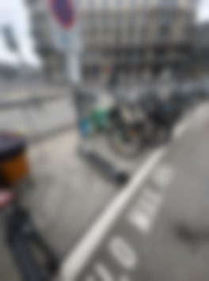
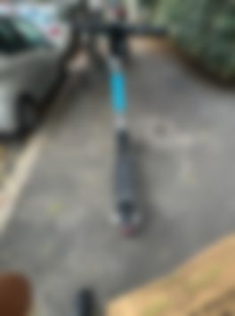
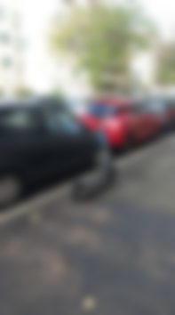
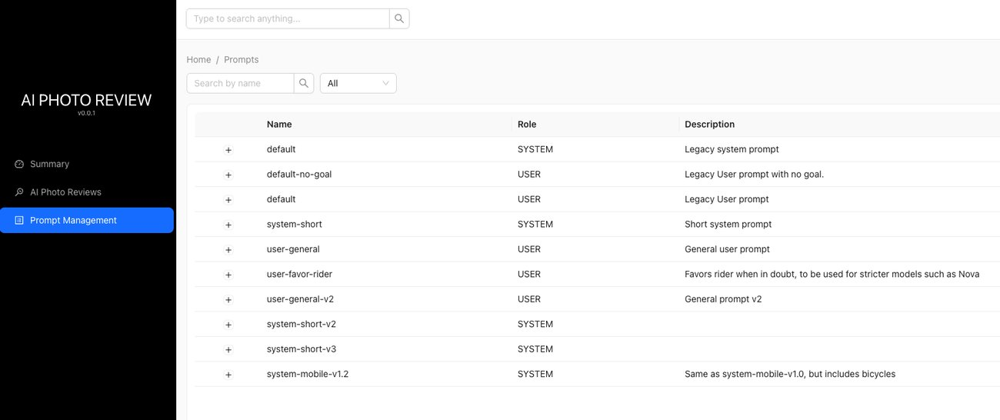

João Silva · Regional Head of Operations, Iberia & France · Bird
- joao.vitor.cardoso.silva.jvcs@gmail.comEmail
- linkedin.com/in/jvcsilvaLinkedIn
- Download CVCV
- Porto · open to relocation
Product, growth & AI: global products that each city can tune
Most of what I shipped started with a problem I saw on the street or heard from a city. I build the first version myself when I can, prove it with an A/B test, and design it so each local team can set it to their own rules.
-
AI parking photo review: from losing city demos to 100+ cities
Bird · Product Manager for the feature, owner of the PRD (product requirements document) · live in 100+ cities
The problem
Talking to cities, we found that badly parked vehicles were a serious problem. Cities score operators on parking control in public tenders, and competitors were already showing photo review in their demos. We had to match it and do it better. And every city has its own parking rules.
What I did
- Wrote the PRD and led it as PM, with three engineers. I built the review logic and the city prompts; Engineering built the integration into the app and the ride-end flow.
- Two checks. One inside the ride-end flow, before the ride closes, so the rider can fix the parking on the spot. One after the ride.
- One product, each city's rules. The rules live in versioned prompts per city and per check. In Cascais the scooter must be in the rack, inside the red square on the ground; in Porto, in a converted car space with blue stripes and a "ponto de partilha" sign. Local teams set the share of photos reviewed, the number of retries and a fine in local currency.
- Made for the street. Flash turns on by itself at night, the wide camera is used when available, the rider sees progress while the AI checks, can retry, and can end the ride anyway after a set number of tries.
- Chose the model with evaluations, not by brand. We tested Amazon Nova, Claude and GPT models and compared each AI verdict with a human reviewer's verdict, tracking cost and latency for every photo. Feedback goes back to the rider in their own language.
What it unlocked next
Rider Score. Built on top of the reviews. Each rider gets a compliance score. Good riders unlock rewards; riders who keep breaking the rules get a warning, then a suspension or a ban.
Enforcement. Finds the riders who abandon vehicles or fail payments again and again. First a warning that explains the problem, then a fine set by each city. It is opt-in: each local team switches it on only where local regulation allows it.
Result
- Live in 100+ cities, 10–25K photos reviewed a day
- Rides ended in authorised spots 87% → 95% on average
- Helped win public tenders (RFPs, Requests for Proposal) that scored parking control
- Best model agreed with human reviewers 87.9% of the time
- Under $0.001 per photo, about 1–2 seconds per review
- Enforcement A/B tested for 3 months, 50/50 split, until statistically significant: +6% NR (Net Revenue) per rider, then adopted by 100+ cities
- Rolled out to 100% of cities in Iberia & France: about +4% regional revenue
What a review looks like

PASS The scooter is parked in a designated bicycle and scooter parking zone, keeping it clear of pedestrian pathways.
- Model
- Claude Sonnet 4.6
- Prompts
- system-mobile-v1.4 · user-favor-rider-v3.9
- Language
- English
- Cost · latency
- <$0.0001 · 1.3 s

FAIL The vehicle is fully visible, but it is parked lengthwise in the middle of a narrow sidewalk rather than fully in the side zone. Please move it close to the edge so pedestrians can pass.
- Model
- GPT-5.6 Luna
- Prompts
- system-short-v3.1 · user-favor-rider-v3.10
- Language
- English
- Cost · latency
- $0.0005 · 1.6 s

FAIL Il veicolo è completamente visibile, ma risulta parcheggiato sulla carreggiata, tra le auto. Parcheggialo in una zona laterale dedicata.
- Model
- GPT-5.6 Luna
- Prompts
- system-short-v3.1 · user-favor-rider-v3.10
- Language
- Italian
- Cost · latency
- $0.0005 · 2.2 s
Real reviews from production. Photos blurred to protect riders' privacy.
Model evaluation: how often human reviewers agreed with the AI

Prompt management in the admin tool: every system and user prompt is versioned, and each review records which ones it used. -
Growth lifecycle: from download to loyal rider, automated in Braze
Bird · Iberia · strategy and journeys designed by me; Engineering built the Braze integration
The problem
Many people downloaded the app and never rode, or rode once and left. Retention firms up after the third ride, so the whole journey had to get riders there, then keep them.
What I did
Defined the lifecycle strategy from scratch and automated every step in Braze, through webhooks and APIs, with Engineering building the integration with our app:
- Activate. 2 hours after a download with no ride, a first-ride discount. No ride yet? A second nudge at 24 hours.
- Get to ride 3. Engagement and incentives until the third ride, including a small discount if there's no second ride within 48 hours of the first.
- Monetise. After 3 rides, riders are segmented and offered ride passes or the subscription, which keep far more riders.
- Save the failed scan. When a rider scans a vehicle and the ride can't start (low battery, vehicle offline or any other reason), very few try again. The moment it happens, they get a discount to ride now.
- Win back. A discount after 15 days inactive, and an instant one after a bad hardware or app experience.
- Protect the margin. A 30-day enrolment window on every automated offer: a rider can enter each one only once every 30 days, so nobody can farm or exploit them.
Result (Iberia)
- Download to first ride 51% → 63%
- Failed-scan offer: 87% of riders who got it took a ride within 5 minutes
- Ride passes 15–20% → 50–65% of all rides
- Resurrected riders +59% and +60% year on year (Feb and May 2025)
- Rides per MAU (Monthly Active User) 7.09 in Feb 2025, +81% year on year
- MAU 9,336 (Jan 2024) → 30,208 at the peak (Jul 2026)
-
Flat-rate subscription: from an Iberia test to 200+ cities
Bird · tested as Strategy & Operations Manager, launched as Country Manager
The goal
A loyalty product that earns more per rider and keeps riders longer than pay-as-you-go or ride passes.
What I did
Ran the pricing and subscription A/B tests (retention +30%), then created and launched the flat-rate subscription in Iberia. It became Bird's main loyalty product.
Result
- Rolled out globally to 200+ cities
- +30% NR per MAU (Monthly Active User) vs ride-pass users, +35% vs pay-as-you-go
- 48% less churn than other riders
-
Two-sided local pricing: one city, two prices
Bird · Iberia, and tourist cities such as the Canary Islands
The problem
Locals have less purchasing power than tourists. One price could not be right for both.
What I did
Resident price. Built without Engineering: an in-app banner opens a form where residents upload proof of address, and an AI agent checks the document and the address.
Tourist price. Built with Engineering. If the postcode on the account is more than a set distance from the city (300 km by default, set by each local team), a different price applies. Postcode became mandatory; for older accounts without one, the system falls back to where the account was created. Validated by Legal, and used only in cities with strong tourist inbound.
Result
- Resident price: +28% NR per user in the region
- Tourist price: +7% NR per rider, A/B tested in every city that adopted it
-
Payments: fewer failed charges, no extra friction
Bird · global · owned end to end, from the idea to the test and the rollout
The problem
Every failed charge is lost revenue, but every safety check adds friction. Pre-authorising every ride held money on the rider's card for 3 to 4 days per ride, and many riders take several rides a day, so they left. Without it, failed payments jumped: digital cards loaded with just enough to start a ride left nothing to charge at the end. And a declined card stopped the rider in the middle of what they were doing.
What I did
Retry on a backup payment method. When a card is declined on a ride pass, a subscription, a ride start or an ad hoc charge, the system now tries the rider's secondary payment method, so the rider and the ride aren't disrupted. About 10% of riders have one on file. Proven in a global 50/50 test before going live.
Pre-authorisation each market can set. Found the right setting for each city, which became a configurable product: a market with failed-payment problems can pre-authorise all cards, or only debit cards (leaving out credit cards and PayPal) to keep friction low.
Result
- Backup-method retries: +1.3% NR (Net Revenue) in a global 50/50 test, statistically significant
- Rolled out to 100% of riders worldwide
- Pre-authorisation went from experiment to a setting local markets can switch on
-
Data agent: from a 2-week queue to asking in plain language
Bird · used across the company · built by me, validated with the data team lead
The problem
Bird ran its data on Metabase, and a small data team spent most of its time keeping the database running. Ops, Growth and BizOps had to ask them for every new query and often waited more than 2 weeks, so decisions waited too. The most resourceful people pasted two existing queries into an LLM and asked it to merge them. That worked sometimes, but it cost them hours and nobody could be sure the numbers were right.
What I did
Gave the agent the whole map. Exported every schema, table and column and loaded them into an AI agent built on Gemini. I chose it on purpose: it was the LLM platform Bird already used, and under Bird's setup our conversations were not used to train Google's models, so our schemas and tables stayed private.
Trained it on the queries that can't be wrong. Spent 1 to 2 weeks feeding it the data team's most important queries, above all revenue queries with many variables, and checked the training with the data team lead.
Shipped it with a safety net. Released it company-wide as a shared Gemini Gem that anyone could copy to their own Gemini account. People ask in plain language ("revenue per market and utilisation by hour and day") and get the query straight away. Every user was asked to compare new queries against the data team's existing dashboards before relying on them.
Piloted it in Slack. Later I put the agent in a company-wide Slack channel through a Slack bot: each request got its own thread with a ready-to-paste Metabase query, and when someone asked for something already requested, the agent pointed to the earlier query and asked whether to reuse it or generate a new one. The pilot ran only briefly, so I have no usage data for it.
Result
- Requests to the data team −90%, measured as monthly tickets before and after launch
- For Operations, ~99% of query needs solved by the agent
- Requests that still reached the data team: 2 weeks → 1 day (simple) or 3 days (complex)
- Used by teams across Bird; the data team got time back for senior leadership, with no need to hire
-
AI agents for the operations team
Bird · Iberia & France, some used globally
What I built
- Event intelligence agent. The team lost hours finding events and measuring them. The agent finds them, predicts expected rides and ROI (return on investment), and recommends fleet size and moves per event, flagging low-margin events as high risk. Python, Gemini API, GitHub automation and a Slack bot.
- AI Ops Manager. Reads daily operating and financial metrics, compares periods, spots trends and builds the regional weekly business review, ranked by ROI so the team works on the issues that matter most. A Slack chatbot answers questions like "last week's revenue in Porto" without opening a dashboard. Explore the weekly review it builds → (demo with a fictional company and synthetic data: 8 countries, 28 cities, 5 tabs)
- Data agent. Turns plain-language questions into SQL queries, trained on Bird's schemas and key revenue queries. See the case above.
Result
- Event agent used in 200+ cities
- 30–150% more rides on qualifying event days
- Weekly business review built automatically every week
Related cases
Where these products met operations and cities.